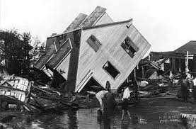
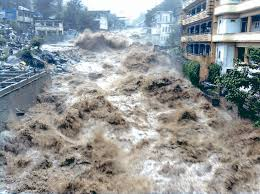
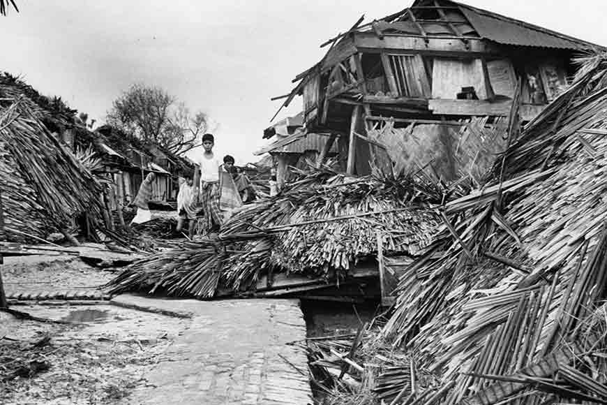
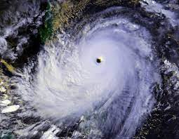

| 10 |
 |
Tri-State Tornado |
The Tri-State Tornado reached around the average speed of 62mph topping
out at 73mph, the typical tornado reaching around 45mph. Also typical tornadoes measure around 500 to 2,000 feet wide.
The Tri-State Tornado was seen to be a mile wide. It also stayed alive for 219 miles.
It killed 625 people, injuring around 2,027 people while also destory 15,000 homes. |
United States of America, the path went through Missouri to southern tip Illinois
before dissapating in lower Indiana. Happened on March 18, 1925 |
| 9 |
 |
Bangladesh Tornado |
The Bangladesh Tornado didn't last too long, however despite it being short lived,
it destoryed every structure within a 2.5 mile radius of it. The tornado itself was 10 miles long
and 1 mile wide. The wind speed was around 200mph rating itself as a EF5 tornado. Killed around
1,300 people, the reason for this was because it touched down in a rural and overpopulate area. |
Bangladesh, touched down in the Manikganj while also dissapating in the same area.
Date this happened was April 26, 1989 |
| 8 |
 |
Hurricane Katrina |
Hurricame Katrina was a Catergory 5 hurrican, before dropping down to a Catergory 3 18 hours
before landfall, winds reaching up to 111-130mph. The tropical storm force winds could be felt
161 miles away from the eye of the storm. It caused great storm surges once it reached land,
causing 80 percent of New Orleans to be underwater which was 20ft deep in some places.
Katrina spawned 62 tornadoes and killed more than 1,800 people. |
United States of America, entirity of the golf coast. August 23 - 31, 2005 |
| 7 |
 |
Iran Blizzard |
The blizzard dumped around 10 to 26 feet of snow. It started a week long period of storms and cold
weather reaching -13 degrees F. It trapped 4,000 villagers beneath the snow as well as
8,000 underneath two avalanches. It was estimated that 6,000 people have died, however
with some futher research it was estimated 4,000 have died. |
Iran, affected northwestern, central, and southern Iran. Feburary 1972 |
| 6 |
 |
The Galveston Storm |
A hurrican, ranging in a catergory 4 hit the low lying island off the coast of Texas.
The hurricane's winds reached around 140mph and brought 15-foot high storm surges with it.
It demolished 3,600 buildings and submerged the whole island to where people were clinging on
to keep themselves from washing away. The storm killed 8,000 to 10,000 people. |
United States, Glavestone, Texas. Sept 8, 1900 |
| 5 |
 |
Hurrican Mitch |
Hurrican Mitch was a catergory 5 hurricane that had winds up to 180mph
and stalled as well as weaken along the east coast. This storm caused flash floods,
mudslides, and avalanches to costal regions espacially in Honduras. It ramped back up again
to tropica storm levels before stricking Florida. It killed more than 11,000 people with
a thousand more gone missing. |
Birthed in the Carribean in Oct 26, 1998. It moved around to Honduras along with areas
in Nicaragua, Belize, El Salvador, Guatemala, Mexico, and United States Florida. The
storm ended on Nov 5 |
| 4 |
 |
The Great Hurrican of 1780 |
This hurricane's strength remains unknown however researchers predict is was most likely
a catergory 5 hurricane, the winds being up to 200mph. It destoryed both British and French
ships, some survivors of the storm speaks that cannons were sent flying and the bark of trees
were being ripped off. The death toll was estimated to be up to 22,000. |
Storm hit the easter Carribean, mostly the Lesser Antilles, islands of Martinique,
St.Eustatius, and Barbados. Estimated time of storm, Oct 10 - 16 |
| 3 |
 |
The Vargas Tragedy |
In this tradegy a storm poured a year's worth of rain over the course of days along
the vertical slopes of Sierra de Avila Mountains north of Caracas. This triggered flooding and
massive landslides known to hisotry. The devestation smashed more than 8,000 homes and 700
apartment buildings. An estimated 30,000 people have died but only 1,000 bodies were recovered,
the other bodies either buried or swept away to sea. |
Venezuela, Vargas coast. December 14-16, 1999 |
| 2 |
 |
Bhola Cyclone |
The cyclone hit Bangladesh, due to Bangladesh's location and typography
amplyfied the impact. The cyclone was only a catergory 3, however it killed estimately 300,000
to 1 million people. It causes serious storm surgers cause of their many rivers, plus so many has
perished because of how densly populated it is. |
Bangladesh, before it won its independent from Pakistan. Year, 1970 |
| 1 |
 |
Super Typhoon Nina |
Nina was not a storm known for its winds but the flooding it has caused. The typhoon has spent
its strength over Taiwan's mountain range, before dropping down to a tropical storm. However, it
stalled over the mainland, spewing out 42 inches of rain in 24 hours. The deluge collapsed the
Banqiao Dam along with 60 more dams along with it. In result a 6.2 mile wide, 9.8-23 foot high
wave blasted across the lowlands of China at speeds 31mph. Destorying an area 34 miles long and
9.3 miles wide. Killed 26,000 people before 145,000 later died due to disease and famine. |
Central China, year 1975 |